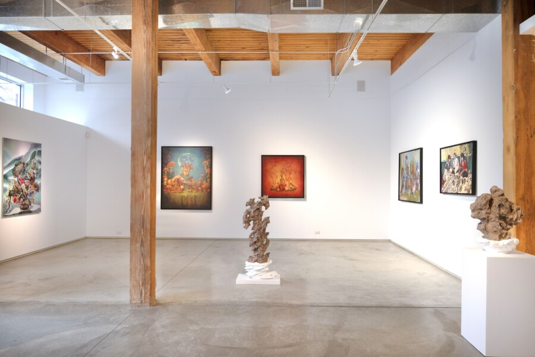

Menasa+: Thresholds of Representation
Bringing together artists from across the Middle East, North Africa, South Asia, Southeast Asia, and the Asian diaspora—these artist’s lived experiences of migration, hybridity, and gender, redefine what global contemporary art can be.
This curatorial framework positions MENASA+ and Asian diasporic dialogues not as categories, but as interconnected conditions of making—translation, survival, inheritance, reinvention, and resistance. It reflects a belief that identity in art is not fixed but continuously negotiated across borders, languages, and histories of gendered power.
At a time when geopolitics continues to compress complex identities into binaries of “us” and “them,” the art world has mirrored similar patterns of exclusion and invisibility. This presentation resists that logic. It centers practitioners—particularly female and femme-identifying artists from MENASA+ and Asian regions—whose voices have emerged from unforgiving cultural and political contexts, yet continue to embody resilience, autonomy, and creative power.
This exhibition was made possible with curatorial assistance from Narimon Safavi, an Iranian-American entrepreneur and cultural commentator; and Rosa Matinfar, curator and writer whose work focuses on contemporary art from the MENASA region.
Narimon Safavi is a social entrepreneur and a media personality/arts commentator with appearances on WBEZ-NPR Chicago, BBC, PBS, El Diario Vasco, and Telecinco. He is the founder of Zaryab Art Labs, an innovative art center focused on the intersection of art and technology, to be located in a historic building in downtown Chicago and scheduled to open in February 2027.
Nari attended Illinois State University, studying Chemistry and Philosophy, with a keen interest in the Philosophy of Science. His current area of exploration is the epistemology of creativity and innovation. His community engagements have included board memberships at the Siskel Film Center (Art Institute of Chicago), Harris School of Public Policy at the University of Chicago, and the Latino Film Festival of Chicago, as well as a stint as a panelist at the National Endowment for the Arts in the USA for grant approvals. Narimon speaks English and Persian fluently and is conversant in Spanish and Azari Turkish.
Rosa Matinfar is an art curator, advisor, and critic whose practice bridges scholarly research, institutional engagement, and cultural strategy. She holds a Master’s degree in Art Studies from the University of Tehran, where her thesis examined the role of museums in legitimizing political ideology, and brings an interdisciplinary methodology shaped by earlier training in Molecular Biology.
Matinfar has held curatorial and advisory roles across museums, galleries, and private collections, including the Carpet Museum of Iran, where in 2025 she curated an exhibition integrating digital art with traditional carpet motifs, as well as ongoing consultancy work with the Anthropology Museum of Nowshahr and the National Carpet Museum of Iran. Her gallery experience includes curatorial and advisory positions at Ragadid Gallery, Nian Art Gallery, and Idea Gallery, where she has developed exhibitions, conducted art-historical and market research, and advised collectors on acquisition and collection-building. She has curated and co-curated international exhibition projects and is currently developing Chel-Negar: Unity in Multiplicity for the National Museum of Iranian Art.